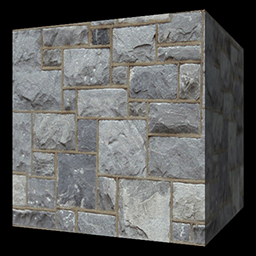

This tutorial will cover how to render 3D models in DirectX 11 using HLSL
The code in this tutorial is based on the code from the diffuse lighting tutorial.
We have already been rendering 3D models in the previous tutorials; however, they were composed of a single triangle and were fairly uninteresting.
Now that the basics have been covered, we'll move forward to render a more complex object.
In this case the object will be a cube.
Before we get into how to render more complex models, we will first talk about model formats.
There are many tools available that allow users to create 3D models.
Maya and Blender are two of the more popular 3D modeling programs.
There are also many other tools with less features but still can do the basics for what we need.
Regardless of which tool you choose to use they will all export their models into numerous different formats.
My suggestion is that you create your own model format and write a parser to convert their export format into your own format.
The reason for this is that the 3D modeling package that you use may change over time and their model format will also change.
Also, you may be using more than one 3D modeling package so you will have multiple different formats to deal with.
So, if you have your own format and convert their formats to your own then your code will never need to change.
You will only need to change your parser program(s) for changing those formats to your own.
As well most 3D modeling packages export a ton of junk that is only useful to that modeling program and you don't need any of it in your model format.
The most important part to making your own format is that it covers everything you need it to do and that it is simple for you to use.
You can also consider making a couple different formats for different objects as some may have animation data, some may be static, and so forth.
The model format I'm going to present is very basic.
It will contain a line for each vertex in the model.
Each line will match the vertex format used in the code which will be position vector (x, y, z), texture coordinates (tu, tv), and the normal vector (nx, ny, nz).
The format will also have the vertex count at the top so you can read the first line and build the memory structures needed before reading in the data.
The format will also require that every three lines makes a triangle, and that the vertices in the model format are presented in clockwise order.
Here is the model file for the cube we are going to render:
Cube.txt
Vertex Count: 36
Data:
-1.0 1.0 -1.0 0.0 0.0 0.0 0.0 -1.0
1.0 1.0 -1.0 1.0 0.0 0.0 0.0 -1.0
-1.0 -1.0 -1.0 0.0 1.0 0.0 0.0 -1.0
-1.0 -1.0 -1.0 0.0 1.0 0.0 0.0 -1.0
1.0 1.0 -1.0 1.0 0.0 0.0 0.0 -1.0
1.0 -1.0 -1.0 1.0 1.0 0.0 0.0 -1.0
1.0 1.0 -1.0 0.0 0.0 1.0 0.0 0.0
1.0 1.0 1.0 1.0 0.0 1.0 0.0 0.0
1.0 -1.0 -1.0 0.0 1.0 1.0 0.0 0.0
1.0 -1.0 -1.0 0.0 1.0 1.0 0.0 0.0
1.0 1.0 1.0 1.0 0.0 1.0 0.0 0.0
1.0 -1.0 1.0 1.0 1.0 1.0 0.0 0.0
1.0 1.0 1.0 0.0 0.0 0.0 0.0 1.0
-1.0 1.0 1.0 1.0 0.0 0.0 0.0 1.0
1.0 -1.0 1.0 0.0 1.0 0.0 0.0 1.0
1.0 -1.0 1.0 0.0 1.0 0.0 0.0 1.0
-1.0 1.0 1.0 1.0 0.0 0.0 0.0 1.0
-1.0 -1.0 1.0 1.0 1.0 0.0 0.0 1.0
-1.0 1.0 1.0 0.0 0.0 -1.0 0.0 0.0
-1.0 1.0 -1.0 1.0 0.0 -1.0 0.0 0.0
-1.0 -1.0 1.0 0.0 1.0 -1.0 0.0 0.0
-1.0 -1.0 1.0 0.0 1.0 -1.0 0.0 0.0
-1.0 1.0 -1.0 1.0 0.0 -1.0 0.0 0.0
-1.0 -1.0 -1.0 1.0 1.0 -1.0 0.0 0.0
-1.0 1.0 1.0 0.0 0.0 0.0 1.0 0.0
1.0 1.0 1.0 1.0 0.0 0.0 1.0 0.0
-1.0 1.0 -1.0 0.0 1.0 0.0 1.0 0.0
-1.0 1.0 -1.0 0.0 1.0 0.0 1.0 0.0
1.0 1.0 1.0 1.0 0.0 0.0 1.0 0.0
1.0 1.0 -1.0 1.0 1.0 0.0 1.0 0.0
-1.0 -1.0 -1.0 0.0 0.0 0.0 -1.0 0.0
1.0 -1.0 -1.0 1.0 0.0 0.0 -1.0 0.0
-1.0 -1.0 1.0 0.0 1.0 0.0 -1.0 0.0
-1.0 -1.0 1.0 0.0 1.0 0.0 -1.0 0.0
1.0 -1.0 -1.0 1.0 0.0 0.0 -1.0 0.0
1.0 -1.0 1.0 1.0 1.0 0.0 -1.0 0.0
So, as you can see there are 36 lines of x, y, z, tu, tv, nx, ny, nz data.
Every three lines composes its own triangle giving us 12 triangles that will form a cube.
The format is very straight forward and can be read directly into our vertex buffers and rendered without any modifications.
Now one thing to watch out for is that some 3D modeling programs export the data in different orders such as left-hand or right-hand coordinate systems.
Remember that by default DirectX 11 is a left-handed coordinate system by default and so the model data needs to match that.
Keep an eye out for those differences and ensure your parsing program can handle converting data into the correct format/order.
Modelclass.h
////////////////////////////////////////////////////////////////////////////////
// Filename: modelclass.h
////////////////////////////////////////////////////////////////////////////////
#ifndef _MODELCLASS_H_
#define _MODELCLASS_H_
The fstream library is now included to handle reading from the model text file.
//////////////
// INCLUDES //
//////////////
#include <d3d11.h>
#include <directxmath.h>
#include <fstream>
using namespace DirectX;
using namespace std;
///////////////////////
// MY CLASS INCLUDES //
///////////////////////
#include "textureclass.h"
////////////////////////////////////////////////////////////////////////////////
// Class name: ModelClass
////////////////////////////////////////////////////////////////////////////////
class ModelClass
{
private:
struct VertexType
{
XMFLOAT3 position;
XMFLOAT2 texture;
XMFLOAT3 normal;
};
The next change is the addition of a new structure to represent the model format.
It is called ModelType.
It contains position, texture, and normal vectors the same as our file format does.
struct ModelType
{
float x, y, z;
float tu, tv;
float nx, ny, nz;
};
public:
ModelClass();
ModelClass(const ModelClass&);
~ModelClass();
The Initialize function will now take as input the character string file name of the model to be loaded.
bool Initialize(ID3D11Device*, ID3D11DeviceContext*, char*, char*);
void Shutdown();
void Render(ID3D11DeviceContext*);
int GetIndexCount();
ID3D11ShaderResourceView* GetTexture();
private:
bool InitializeBuffers(ID3D11Device*);
void ShutdownBuffers();
void RenderBuffers(ID3D11DeviceContext*);
bool LoadTexture(ID3D11Device*, ID3D11DeviceContext*, char*);
void ReleaseTexture();
We also have two new functions to handle loading and unloading the model data from the text file.
bool LoadModel(char*);
void ReleaseModel();
private:
ID3D11Buffer *m_vertexBuffer, *m_indexBuffer;
int m_vertexCount, m_indexCount;
TextureClass* m_Texture;
The final change is a new private variable called m_model which is going to be an array of the new private structure ModelType.
This variable will be used to read in and hold the model data before it is placed in the vertex buffer.
ModelType* m_model;
};
#endif
Modelclass.cpp
////////////////////////////////////////////////////////////////////////////////
// Filename: modelclass.cpp
////////////////////////////////////////////////////////////////////////////////
#include "modelclass.h"
The new model structure is set to null in the class constructor.
ModelClass::ModelClass()
{
m_vertexBuffer = 0;
m_indexBuffer = 0;
m_Texture = 0;
m_model = 0;
}
ModelClass::ModelClass(const ModelClass& other)
{
}
ModelClass::~ModelClass()
{
}
The Initialize function now takes as input the file name of the model that should be loaded.
And in the Initialize function we now call the new LoadModel function first.
It will load the model data from the file name we provide into the new m_model array.
Once this model array is filled, we can then build the vertex and index buffers from it.
Since InitializeBuffers now depends on this model data you have to make sure to call the functions in the correct order.
bool ModelClass::Initialize(ID3D11Device* device, ID3D11DeviceContext* deviceContext, char* modelFilename, char* textureFilename)
{
bool result;
// Load in the model data.
result = LoadModel(modelFilename);
if (!result)
{
return false;
}
// Initialize the vertex and index buffers.
result = InitializeBuffers(device);
if(!result)
{
return false;
}
// Load the texture for this model.
result = LoadTexture(device, deviceContext, textureFilename);
if(!result)
{
return false;
}
return true;
}
In the Shutdown function we add a call to the ReleaseModel function to delete the m_model array data once we are done.
void ModelClass::Shutdown()
{
// Release the model texture.
ReleaseTexture();
// Shutdown the vertex and index buffers.
ShutdownBuffers();
// Release the model data.
ReleaseModel();
return;
}
void ModelClass::Render(ID3D11DeviceContext* deviceContext)
{
// Put the vertex and index buffers on the graphics pipeline to prepare them for drawing.
RenderBuffers(deviceContext);
return;
}
int ModelClass::GetIndexCount()
{
return m_indexCount;
}
ID3D11ShaderResourceView* ModelClass::GetTexture()
{
return m_Texture->GetTexture();
}
bool ModelClass::InitializeBuffers(ID3D11Device* device)
{
VertexType* vertices;
unsigned long* indices;
D3D11_BUFFER_DESC vertexBufferDesc, indexBufferDesc;
D3D11_SUBRESOURCE_DATA vertexData, indexData;
HRESULT result;
int i;
Take note that we will no longer manually set the vertex and index count here.
Once we get to the ModelClass::LoadModel function you will see that we read the vertex and index counts in at that point instead.
// Create the vertex array.
vertices = new VertexType[m_vertexCount];
// Create the index array.
indices = new unsigned long[m_indexCount];
Loading the vertex and index arrays has changed a bit.
Instead of setting the values manually we loop through all the elements in the new m_model array and copy that data from there into the vertex array.
The index array is easy to build as each vertex we load has the same index number as the position in the array it was loaded into.
// Load the vertex array and index array with data.
for(i=0; i<m_vertexCount; i++)
{
vertices[i].position = XMFLOAT3(m_model[i].x, m_model[i].y, m_model[i].z);
vertices[i].texture = XMFLOAT2(m_model[i].tu, m_model[i].tv);
vertices[i].normal = XMFLOAT3(m_model[i].nx, m_model[i].ny, m_model[i].nz);
indices[i] = i;
}
// Set up the description of the static vertex buffer.
vertexBufferDesc.Usage = D3D11_USAGE_DEFAULT;
vertexBufferDesc.ByteWidth = sizeof(VertexType) * m_vertexCount;
vertexBufferDesc.BindFlags = D3D11_BIND_VERTEX_BUFFER;
vertexBufferDesc.CPUAccessFlags = 0;
vertexBufferDesc.MiscFlags = 0;
vertexBufferDesc.StructureByteStride = 0;
// Give the subresource structure a pointer to the vertex data.
vertexData.pSysMem = vertices;
vertexData.SysMemPitch = 0;
vertexData.SysMemSlicePitch = 0;
// Now create the vertex buffer.
result = device->CreateBuffer(&vertexBufferDesc, &vertexData, &m_vertexBuffer);
if(FAILED(result))
{
return false;
}
// Set up the description of the static index buffer.
indexBufferDesc.Usage = D3D11_USAGE_DEFAULT;
indexBufferDesc.ByteWidth = sizeof(unsigned long) * m_indexCount;
indexBufferDesc.BindFlags = D3D11_BIND_INDEX_BUFFER;
indexBufferDesc.CPUAccessFlags = 0;
indexBufferDesc.MiscFlags = 0;
indexBufferDesc.StructureByteStride = 0;
// Give the subresource structure a pointer to the index data.
indexData.pSysMem = indices;
indexData.SysMemPitch = 0;
indexData.SysMemSlicePitch = 0;
// Create the index buffer.
result = device->CreateBuffer(&indexBufferDesc, &indexData, &m_indexBuffer);
if(FAILED(result))
{
return false;
}
// Release the arrays now that the vertex and index buffers have been created and loaded.
delete [] vertices;
vertices = 0;
delete [] indices;
indices = 0;
return true;
}
void ModelClass::ShutdownBuffers()
{
// Release the index buffer.
if(m_indexBuffer)
{
m_indexBuffer->Release();
m_indexBuffer = 0;
}
// Release the vertex buffer.
if(m_vertexBuffer)
{
m_vertexBuffer->Release();
m_vertexBuffer = 0;
}
return;
}
void ModelClass::RenderBuffers(ID3D11DeviceContext* deviceContext)
{
unsigned int stride;
unsigned int offset;
// Set vertex buffer stride and offset.
stride = sizeof(VertexType);
offset = 0;
// Set the vertex buffer to active in the input assembler so it can be rendered.
deviceContext->IASetVertexBuffers(0, 1, &m_vertexBuffer, &stride, &offset);
// Set the index buffer to active in the input assembler so it can be rendered.
deviceContext->IASetIndexBuffer(m_indexBuffer, DXGI_FORMAT_R32_UINT, 0);
// Set the type of primitive that should be rendered from this vertex buffer, in this case triangles.
deviceContext->IASetPrimitiveTopology(D3D11_PRIMITIVE_TOPOLOGY_TRIANGLELIST);
return;
}
bool ModelClass::LoadTexture(ID3D11Device* device, ID3D11DeviceContext* deviceContext, char* filename)
{
bool result;
// Create and initialize the texture object.
m_Texture = new TextureClass;
result = m_Texture->Initialize(device, deviceContext, filename);
if(!result)
{
return false;
}
return true;
}
void ModelClass::ReleaseTexture()
{
// Release the texture object.
if(m_Texture)
{
m_Texture->Shutdown();
delete m_Texture;
m_Texture = 0;
}
return;
}
This is the new LoadModel function which handles loading the model data from the text file into the m_model array variable.
It opens the text file and reads in the vertex count first.
After reading the vertex count it creates the ModelType array and then reads each line into the array.
Both the vertex count and index count are now set in this function.
bool ModelClass::LoadModel(char* filename)
{
ifstream fin;
char input;
int i;
// Open the model file.
fin.open(filename);
// If it could not open the file then exit.
if(fin.fail())
{
return false;
}
// Read up to the value of vertex count.
fin.get(input);
while (input != ':')
{
fin.get(input);
}
// Read in the vertex count.
fin >> m_vertexCount;
// Set the number of indices to be the same as the vertex count.
m_indexCount = m_vertexCount;
// Create the model using the vertex count that was read in.
m_model = new ModelType[m_vertexCount];
// Read up to the beginning of the data.
fin.get(input);
while (input != ':')
{
fin.get(input);
}
fin.get(input);
fin.get(input);
// Read in the vertex data.
for(i=0; i<m_vertexCount; i++)
{
fin >> m_model[i].x >> m_model[i].y >> m_model[i].z;
fin >> m_model[i].tu >> m_model[i].tv;
fin >> m_model[i].nx >> m_model[i].ny >> m_model[i].nz;
}
// Close the model file.
fin.close();
return true;
}
The ReleaseModel function handles deleting the model data array.
void ModelClass::ReleaseModel()
{
if(m_model)
{
delete [] m_model;
m_model = 0;
}
return;
}
Applicationclass.h
The header for the ApplicationClass has not changed since the previous tutorial.
////////////////////////////////////////////////////////////////////////////////
// Filename: applicationclass.h
////////////////////////////////////////////////////////////////////////////////
#ifndef _APPLICATIONCLASS_H_
#define _APPLICATIONCLASS_H_
///////////////////////
// MY CLASS INCLUDES //
///////////////////////
#include "d3dclass.h"
#include "cameraclass.h"
#include "modelclass.h"
#include "lightshaderclass.h"
#include "lightclass.h"
/////////////
// GLOBALS //
/////////////
const bool FULL_SCREEN = false;
const bool VSYNC_ENABLED = true;
const float SCREEN_DEPTH = 1000.0f;
const float SCREEN_NEAR = 0.3f;
////////////////////////////////////////////////////////////////////////////////
// Class name: ApplicationClass
////////////////////////////////////////////////////////////////////////////////
class ApplicationClass
{
public:
ApplicationClass();
ApplicationClass(const ApplicationClass&);
~ApplicationClass();
bool Initialize(int, int, HWND);
void Shutdown();
bool Frame();
private:
bool Render(float);
private:
D3DClass* m_Direct3D;
CameraClass* m_Camera;
ModelClass* m_Model;
LightShaderClass* m_LightShader;
LightClass* m_Light;
};
#endif
Applicationclass.cpp
////////////////////////////////////////////////////////////////////////////////
// Filename: applicationclass.cpp
////////////////////////////////////////////////////////////////////////////////
#include "applicationclass.h"
ApplicationClass::ApplicationClass()
{
m_Direct3D = 0;
m_Camera = 0;
m_Model = 0;
m_LightShader = 0;
m_Light = 0;
}
ApplicationClass::ApplicationClass(const ApplicationClass& other)
{
}
ApplicationClass::~ApplicationClass()
{
}
The model initialization now takes in the filename of the model file it is loading.
In this tutorial we will use the cube.txt file so this model loads in a 3D cube object for rendering.
bool ApplicationClass::Initialize(int screenWidth, int screenHeight, HWND hwnd)
{
char modelFilename[128];
char textureFilename[128];
bool result;
// Create and initialize the Direct3D object.
m_Direct3D = new D3DClass;
result = m_Direct3D->Initialize(screenWidth, screenHeight, VSYNC_ENABLED, hwnd, FULL_SCREEN, SCREEN_DEPTH, SCREEN_NEAR);
if(!result)
{
MessageBox(hwnd, L"Could not initialize Direct3D", L"Error", MB_OK);
return false;
}
// Create the camera object.
m_Camera = new CameraClass;
// Set the initial position of the camera.
m_Camera->SetPosition(0.0f, 0.0f, -5.0f);
// Set the file name of the model.
strcpy_s(modelFilename, "../Engine/data/cube.txt");
// Set the file name of the texture file that we will be loading.
strcpy_s(textureFilename, "../Engine/data/stone01.tga");
// Create and initialize the model object.
m_Model = new ModelClass;
result = m_Model->Initialize(m_Direct3D->GetDevice(), m_Direct3D->GetDeviceContext(), modelFilename, textureFilename);
if(!result)
{
MessageBox(hwnd, L"Could not initialize the model object.", L"Error", MB_OK);
return false;
}
// Create and initialize the light shader object.
m_LightShader = new LightShaderClass;
result = m_LightShader->Initialize(m_Direct3D->GetDevice(), hwnd);
if(!result)
{
MessageBox(hwnd, L"Could not initialize the light shader object.", L"Error", MB_OK);
return false;
}
// Create and initialize the light object.
m_Light = new LightClass;
m_Light->SetDiffuseColor(1.0f, 1.0f, 1.0f, 1.0f);
m_Light->SetDirection(0.0f, 0.0f, 1.0f);
return true;
}
void ApplicationClass::Shutdown()
{
// Release the light object.
if(m_Light)
{
delete m_Light;
m_Light = 0;
}
// Release the light shader object.
if(m_LightShader)
{
m_LightShader->Shutdown();
delete m_LightShader;
m_LightShader = 0;
}
// Release the model object.
if(m_Model)
{
m_Model->Shutdown();
delete m_Model;
m_Model = 0;
}
// Release the camera object.
if(m_Camera)
{
delete m_Camera;
m_Camera = 0;
}
// Release the Direct3D object.
if(m_Direct3D)
{
m_Direct3D->Shutdown();
delete m_Direct3D;
m_Direct3D = 0;
}
return;
}
bool ApplicationClass::Frame()
{
static float rotation = 0.0f;
bool result;
// Update the rotation variable each frame.
rotation -= 0.0174532925f * 0.25f;
if(rotation < 0.0f)
{
rotation += 360.0f;
}
// Render the graphics scene.
result = Render(rotation);
if(!result)
{
return false;
}
return true;
}
bool ApplicationClass::Render(float rotation)
{
XMMATRIX worldMatrix, viewMatrix, projectionMatrix;
bool result;
// Clear the buffers to begin the scene.
m_Direct3D->BeginScene(0.0f, 0.0f, 0.0f, 1.0f);
// Generate the view matrix based on the camera's position.
m_Camera->Render();
// Get the world, view, and projection matrices from the camera and d3d objects.
m_Direct3D->GetWorldMatrix(worldMatrix);
m_Camera->GetViewMatrix(viewMatrix);
m_Direct3D->GetProjectionMatrix(projectionMatrix);
// Rotate the world matrix by the rotation value so that the triangle will spin.
worldMatrix = XMMatrixRotationY(rotation);
// Put the model vertex and index buffers on the graphics pipeline to prepare them for drawing.
m_Model->Render(m_Direct3D->GetDeviceContext());
// Render the model using the light shader.
result = m_LightShader->Render(m_Direct3D->GetDeviceContext(), m_Model->GetIndexCount(), worldMatrix, viewMatrix, projectionMatrix, m_Model->GetTexture(),
m_Light->GetDirection(), m_Light->GetDiffuseColor());
if(!result)
{
return false;
}
// Present the rendered scene to the screen.
m_Direct3D->EndScene();
return true;
}
Summary
With the changes to the ModelClass we can now load in 3D models and render them.
The format used here is just for basic static objects with lighting, however it is a good start to understanding how model formats work.

To Do Exercises
1. Recompile the code and run the program. You should get a rotating cube with the stone texture on it. Press escape to quit once done.
2. Find a decent 3D modeling package (hopefully something free) and create your own simple models and export them. Start looking at the format.
3. Write a simple parser program that takes the model exports and converts it to the format used here. Replace cube.txt with your model and run the program.
Source Code
Source Code and Data Files: dx11win10tut07_src.zip